Selected visual work
기술 정보를
선택할 수 있는 콘텐츠로
카드뉴스와 제안서로 복잡한 내용을 이해하기 쉬운 선택·안전·제안의 언어로 구성했습니다.
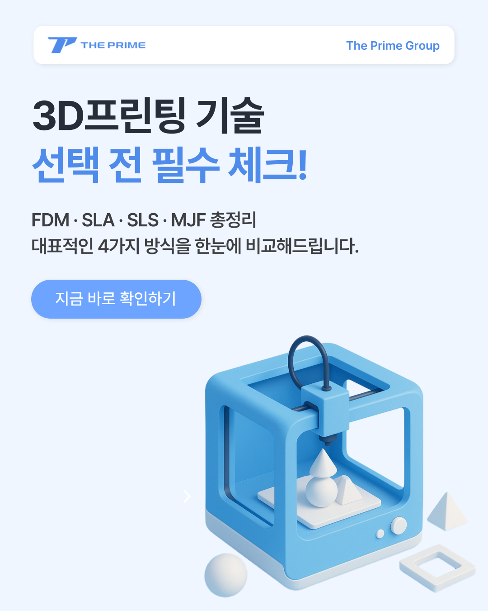
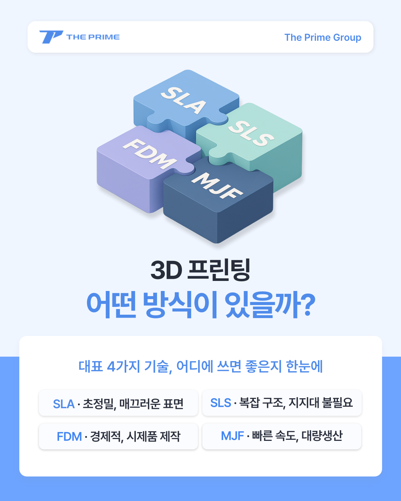
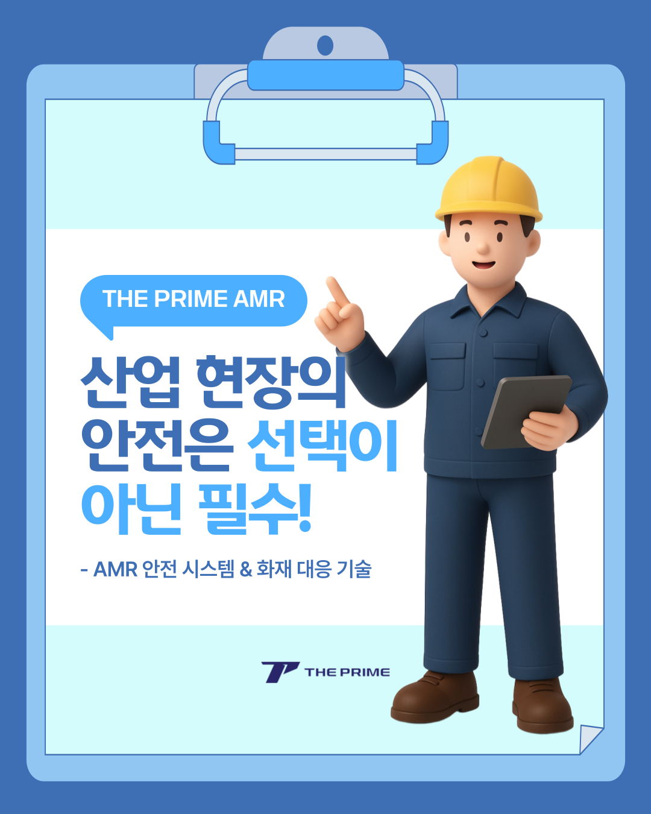
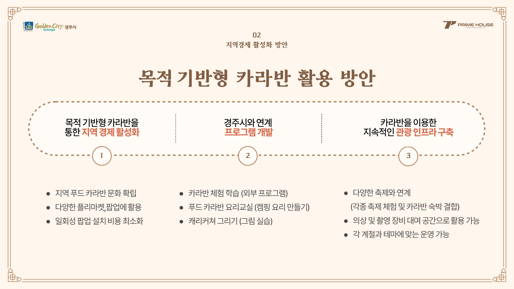
한 장의 화면에도
기획의 기준을 남깁니다.
정보의 우선순위를 정하고, 읽는 흐름을 설계한 뒤, 목적에 맞는 이미지와 문장을 조합합니다. 아래 작업에서는 직접 맡은 범위와 AI 활용 범위를 구분해 표기했습니다.
01 / CARD-NEWS
3D 프린팅 선택 가이드
서로 다른 3D 프린팅 방식을 비교해, 사용 목적에 따라 선택 기준을 빠르게 파악할 수 있도록 구성한 카드뉴스입니다.
- Role
- 콘텐츠 기획 · 카피 · 템플릿 기반 편집
- AI
- 일부 3D 일러스트 생성에 활용
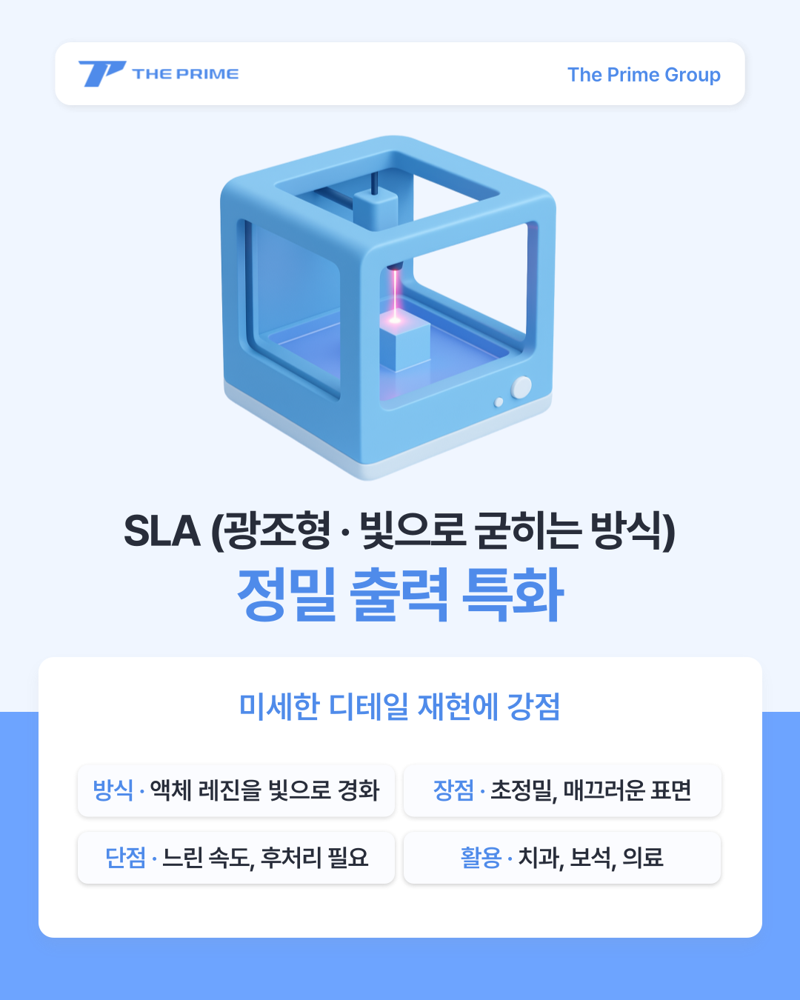
02 / PRESENTATION
경주 카라반 제안서
APEC 경주 개최 이슈를 출발점으로, 카라반 체험 프로그램과 운영 방향을 제안한 56페이지 제안서입니다.
- Role
- 시장 조사 · 기획 · 구성 · 카피 · PPT 디자인
- AI
- 사용하지 않음
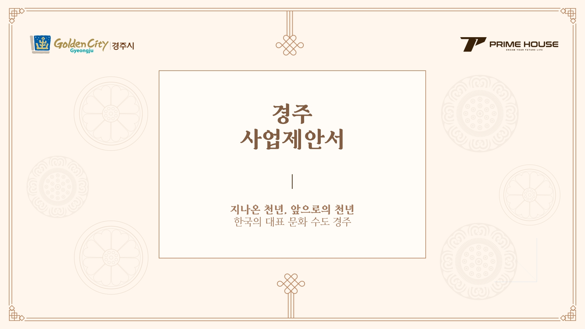
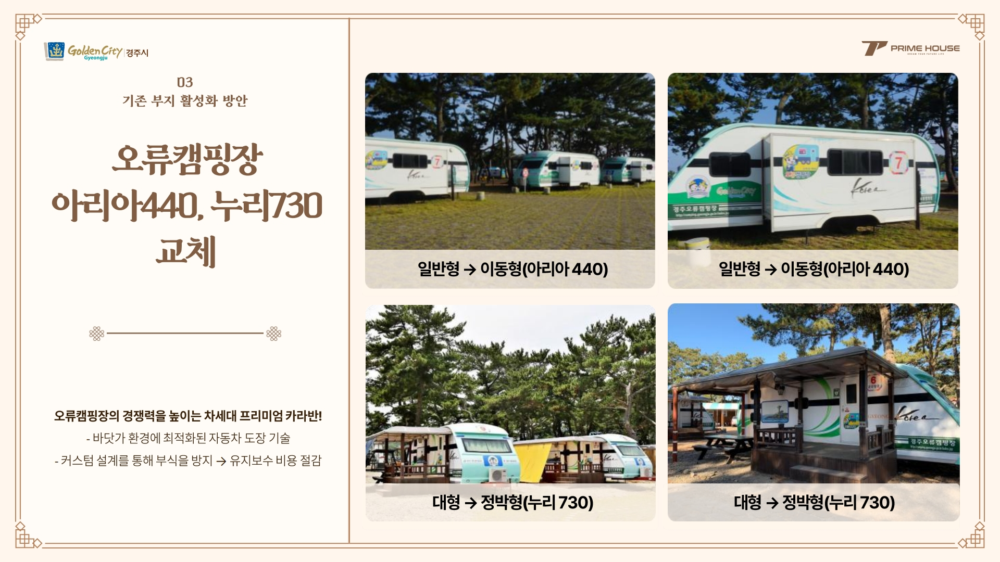
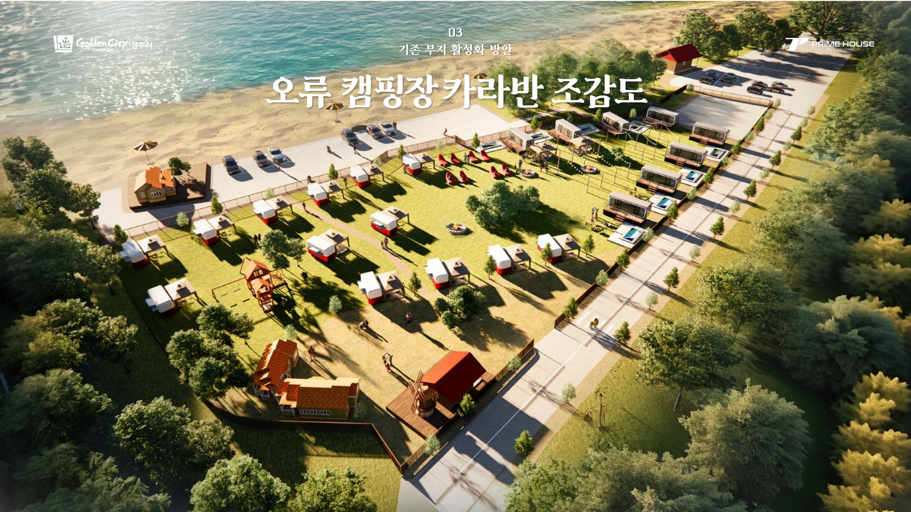
03 / CARD-NEWS
AMR 안전 콘텐츠
산업 현장의 안전 이슈를 상황별로 나누고, 현장에서 바로 확인할 수 있는 카드뉴스 시리즈로 편집했습니다.
- Role
- 콘텐츠 기획 · 카피 · 템플릿 기반 편집
- AI
- 일부 일러스트 생성에 활용
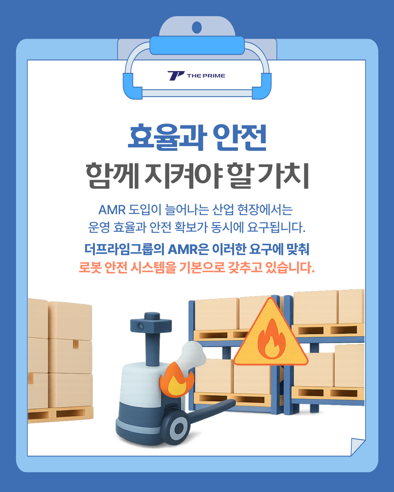
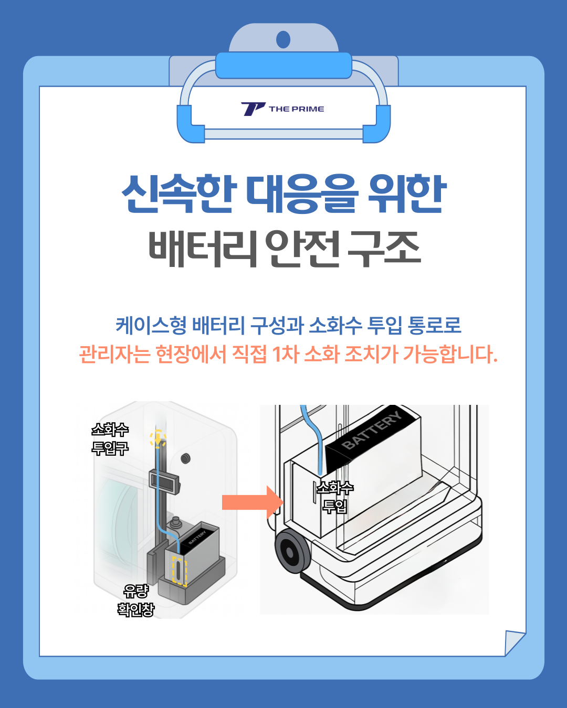
04 / ADDITIONAL
추가 콘텐츠 작업
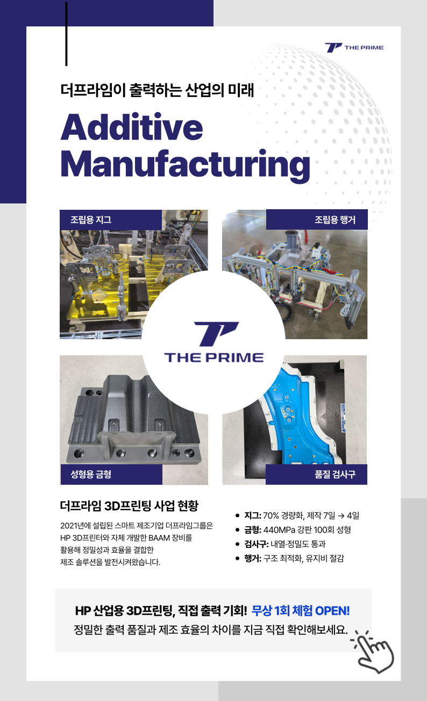
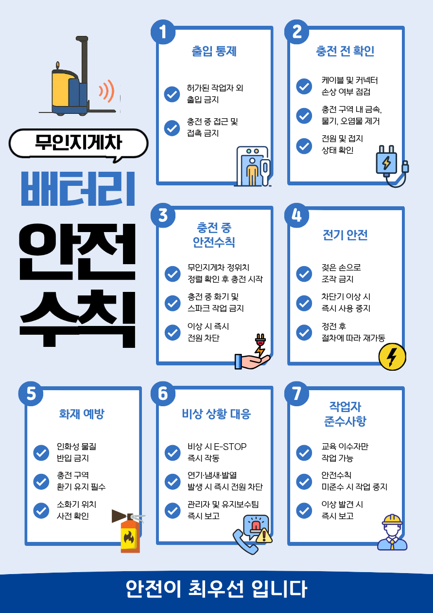